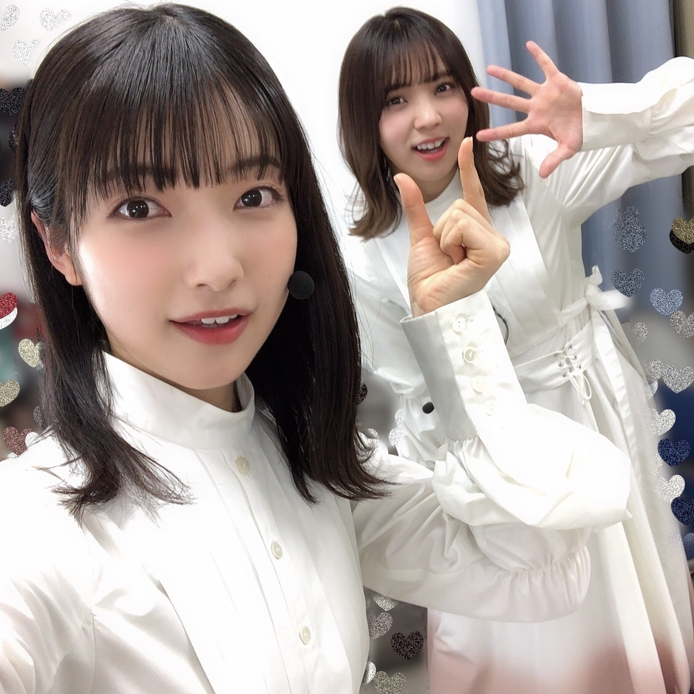
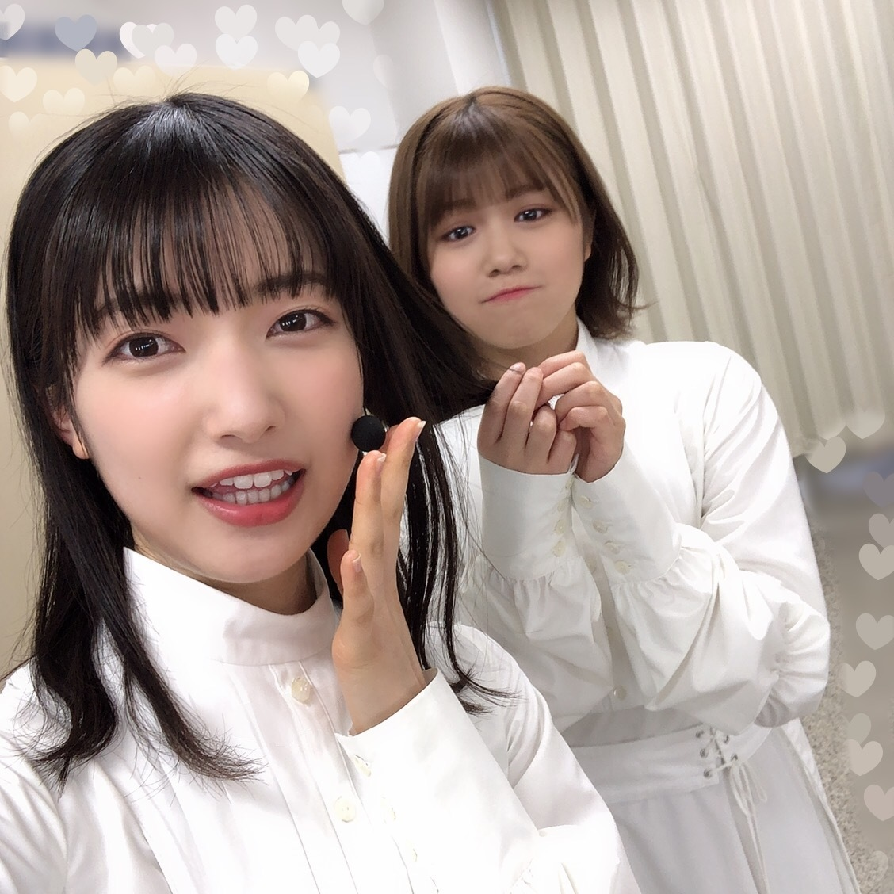
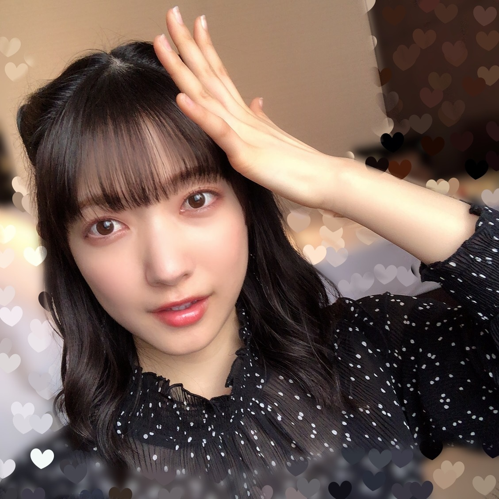
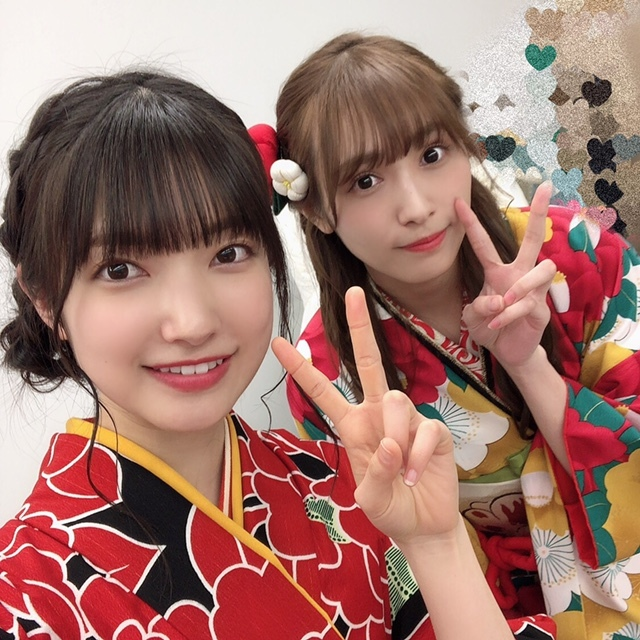

ピアノを習っていた頃、
あのときは確か中学1年生だった
ピアノの先生が勉強のために
プロの方々の演奏会へ連れて行ってくださって、
そのとき初めて、コンサートホールで
"生演奏"を聴いた
演奏会が終わり、
じゃあそろそろ帰ろうか、という雰囲気の中
先生に今日の感想を求められて
「クラシックのCD聴いてるみたいでした」
なんて、、、、
もっと他にあったでしょう！
とツッコまずにはいられないような感想を言ったことがある
ああ、
あのときもっといいこと言えたなあ
そんなことをNHKさんからの帰り道に思い出した
26日（火）NHKさん『うたコン』に出演させていただきました✨
バンドの方々が生演奏をしてくださり
また新しい『Nobody's fault』を表現できたのではないかなと、思います！
生の楽器の音が体の芯に響いてきて
響いてくるエネルギーに
自分の中のエネルギーで応えようとしながら
パフォーマンスしている感覚が
はっきりとありました
見てくださったみなさん、ありがとうございました✨


🍼あげなきゃ（あせあせ）
先週のそこさくでは初めてネタ作りに挑戦し、
西村ヒロチョさんのネタを櫻坂バージョンで披露させていただきました！！
ありがとうございました！

アオ☆
世界中の全ては
みんなロマンロマンロマン
ロマンティック♩

23日（土）、24日（日）は1stシングル最後のミーグリでした！ありがとうございました！
目に、頭に、心に
忘れたくないことをいっぱい刻み込みました✴︎
会いにきてくださった方にとっても
忘れたくない時間、思い出したら幸せになれる時間になっていたら嬉しいです
2月、3月のイベントも楽しみにしています！
にゃん
にゃん
わん
愛おしい時間でした♡
また会いましょう✴︎
🧀🧀🧀🌸
大園玲